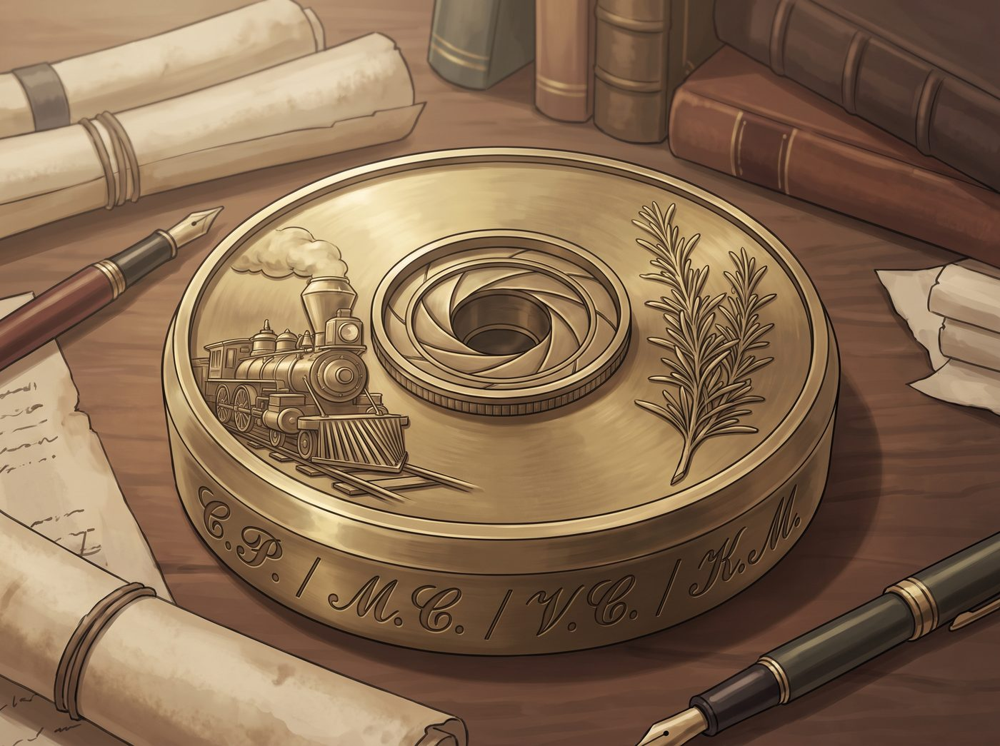

黃銅鎮紙

皮卡一路轟鳴著駛回波特蘭東區。車門關上的那一刻，原本熱鬧嘈雜的舊鐵道花園突然安靜得有些讓人不習慣。
走進二號車廂，空氣裡依舊飄著微酸的切削油與迷迭香氣息，但那個總是繫著厚重皮圍裙、手腳麻利地擦拭導軌的少年身影，已經不在工位前了。
一、 空落落的二號車廂：口嫌體正直的失落
四個人雖然嘴角都帶著替 Miles 高興的笑意，但肢體語言卻出賣了心底那股突如其來的落差感：
- Chloe 的「大弟子戒斷反應」：
Chloe 習慣性地走到車床邊，剛想大喊「小子，把第三排的 12 號套筒給老娘遞過來」，話到了嘴邊卻猛地咽了回去。她看著乾淨整齊的工具架，抓了抓藍髮，一屁股坐在她的滑板上，狠狠咬碎了嘴裡的棒棒糖：「嘖……這小子走得真不是時候。老娘剛打算教他三軸銑床的極限轉速調校，現在連個幫忙倒切削廢渣的人都沒了。」
- Max 的「鏡頭盲區」：
Max 摘下黑框眼鏡，拿著吹氣球清理暗房的放大機鏡頭。她下意識地看向平日裡 Miles 拓印版畫的長桌，低聲笑了笑：「平常總覺得他進暗房時腳步太輕像個幽靈，現在突然安靜下來，連快門按下去的聲音都顯得太響了。」
- Victoria 的「動線違和感」：
Victoria 抱著 iPad 走過中央通道，手指在屏幕上劃了半天，最後停在排班表上，冷冷地嘆了口氣：「不得不說，他把五金盒按色系和螺距歸位的標準，比你們三個加起來都要嚴謹。接下來新招募的學員如果達不到這個效率，我會非常頭痛。」
- Kate 的「便當份量習慣」：
Kate 走進廚房準備泡下午茶，看著案板上切了一半的南瓜，溫柔地愣在原地：「糟糕……習慣性地多切了一大塊南瓜和三塊牛肉呢。」
二、 工作台底下的暗格：一封留在黃銅板下的信
就在 Chloe 懨懨地準備去開車床時，她在主軸卡盤正下方的集屑盒旁，看見了一塊擦得鋥亮、壓著牛皮紙信封的黃銅圓盤。
那是一塊精雕細刻的黃銅鎮紙，上面浮雕著工坊標誌性的火車頭、相機光圈與一株挺拔的迷迭香，邊緣用極細微的雕刻刀刻著四個名字的縮寫：【C.P. / M.C. / V.C. / K.M.】。
信封正面用工整的炭筆寫著：《致二號車廂的所有導師與家人》。
Chloe 愣了一下，連忙把信封抽了出來。Max、Victoria 和 Kate 也立刻圍了過來。
三、 Miles 的信：留給四位姐姐的白描與救贖
拆開信紙，裡面是用無酸素描紙寫就的字跡，字體剛勁沉穩，字裡行間帶著一個街頭少年最純粹的真摯：
各位姐姐：
當你們讀到這封信的時候，我應該已經坐在大學的階梯教室裡了。原諒我沒有當面把這些話說出口，因為 McCall 先生說過，告別時如果話說得太多，眼淚會讓手裡的工具生銹。
在來到這裡之前，我眼裡的世界只有街頭灰暗的泥潭、警笛的尖叫，以及隨時會砸碎未來的絕望。那時候我覺得，自己大概一輩子也就是一塊被隨手丟棄在鐵軌旁的廢鐵。
是這節車廂給了我第二次生命。
- 給 Chloe 姐： 謝謝你把最硬核的扳手交到我手裡，用最大聲的咆哮教會我「握緊工具的人，不需要向任何混亂低頭」。你是我見過最強大、最自由的工匠，你改裝的每一根軸承，都是我心中最酷的藝術品。
- 給 Max 姐： 謝謝你在暗房裡握著我的手，教我如何在黑暗裡等待光芒顯影。是你讓我明白，我那些被塗抹在牆上的畫不是破壞，而是值得被無酸紙與相框鄭重對待的靈魂。
- 給 Victoria 姐： 謝謝你每一次用激光筆挑出我的毛刺與偏差。你看似最嚴格，但也是你用最堅固的資源為我築起了通往大學的階梯，教會我尊嚴與秩序的分量。
- 給 Kate 姐： 謝謝你每一天的熱湯、草本茶與溫柔的目光。在我不相信自己能被原諒的時候，是你讓我聞到了迷迭香的香氣，讓我相信這個世界依然有值得被守護的純白。
德產車床的導軌我昨晚已經重新上了 68 號抗磨潤滑油；工具牆第三排缺少的那把 14 號管鉗，我用零用錢買了一把新的補上了；暗房的定影液我也按 1:4 重新調配好放在水槽下。
這裡永遠是我的起點與家。週末的實訓課，我一定準時回來報到當助教——如果 Chloe 姐不嫌棄我手腳慢的話。
永遠的學員與工坊弟弟
Miles 敬上
四、 淚光與新的齒輪
讀完信，二號車廂裡安靜了許久。
Kate 輕輕用手背抹去眼角泛起的淚光，嘴角卻洋溢著無比欣慰的溫柔笑意；Victoria 推了推眼鏡，微微偏過頭去看向窗外的鐵軌，悄悄掩飾著自己有些發紅的眼眶；Max 把那張信紙小心翼翼地撫平，準備將它收錄進手帳最珍貴的篇章。
「靠……」
Chloe 吸了吸鼻子，有些狼狽地把棒球帽往下壓了壓遮住眼睛，隨後猛地跳下帶輪滑板，一把抓起那塊黃銅鎮紙，在掌心拋了一下，大聲吼道：
「這小子！寫這麼酸的話幹嘛？！誰允許他隨便買 14 號管鉗了——老娘週末一定要好好檢查他的金屬螺紋到底合不合格！」
雖然嘴上依然罵罵咧咧，但 Chloe 的眼角分明閃爍著無比驕傲的水光。
她大步走回車床前，按下了電源開關。
「嗡——」
主軸飛速旋轉，切削油的清香再次瀰漫。車廂外的陽光穿過天窗，照耀著乾淨的工具牆與那幅巨大的外牆壁畫。
那個曾經迷茫的少年已經揚帆啟航，而在這座庇護著創傷與希望的鋼鐵方舟裡，溫暖的齒輪伴隨著對未來的期盼，繼續堅定、沉穩地轟鳴向前。